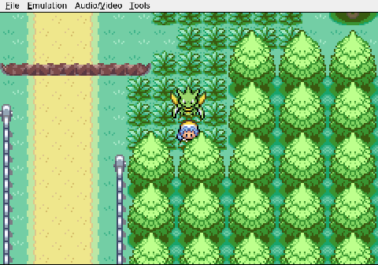
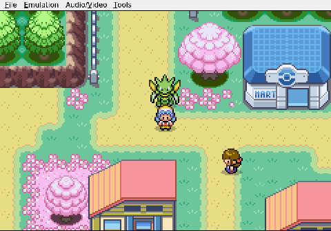
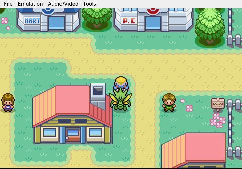
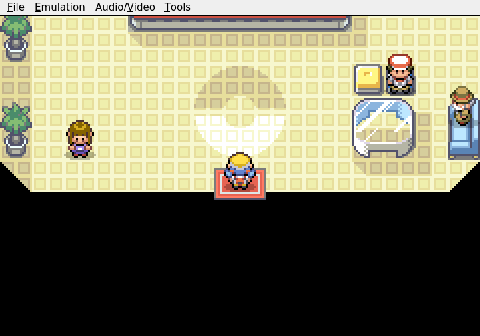

Gemini plays Pokemon Heart & Soul, Run 2
The Scenic Route
Trying to find a building in a straight line proves to be the hardest boss yet.
Viper the Scyther is in bad shape. One stray hit from anything on the route will end the run's only team member, so Gemini does the sensible thing and turns toward the Cherrygrove Pokémon Center.

It walks north onto Route 30.

This is the opposite of south, which is where the Center is. The AI catches the mistake, doubles back, and actually reaches Cherrygrove City. Progress. Then, through a sequence of navigation commands that defy spatial reasoning, it warps itself all the way to New Bark Town—the starting village, a full route away from where it needs to be.
It warps back to Cherrygrove. It is now standing in the same city as the Pokémon Center for the second time, still not inside it.

Seven minutes pass. Seven real, ticking minutes of Gemini pacing the streets of a town with maybe four buildings in it. Viper's health bar sits in the red the entire time.

When Nurse Joy finally heals the team, the word "finally" is doing enormous structural work. Nothing attacked on the way. Nobody died. The only enemy was a grid-based map and an AI with no sense of direction.